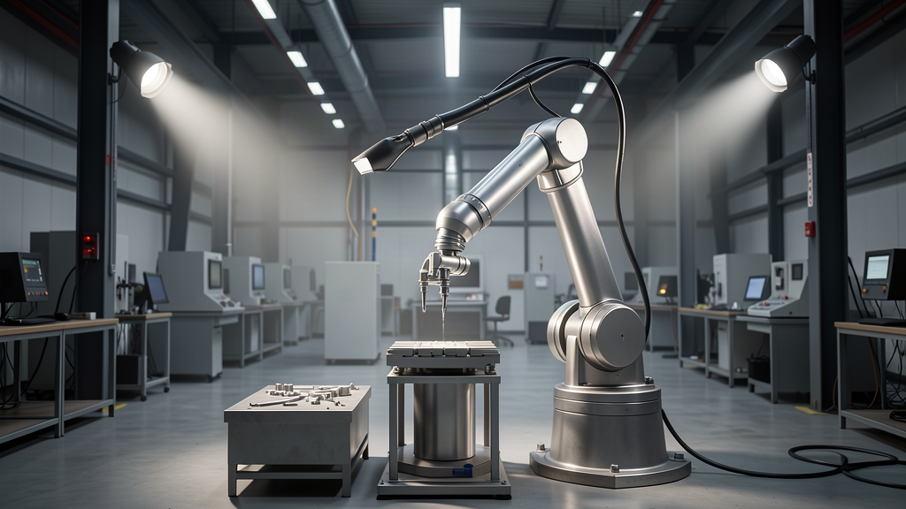
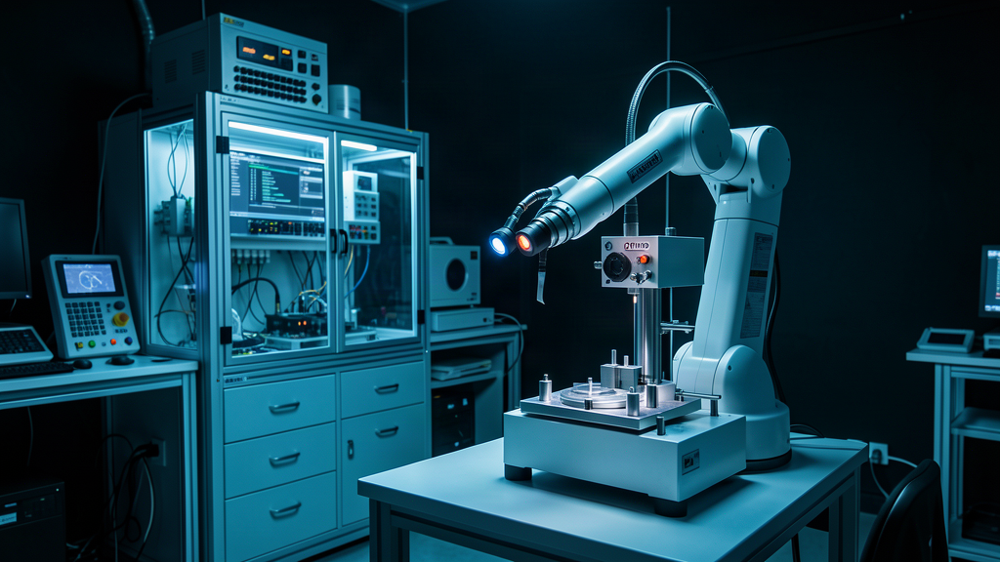
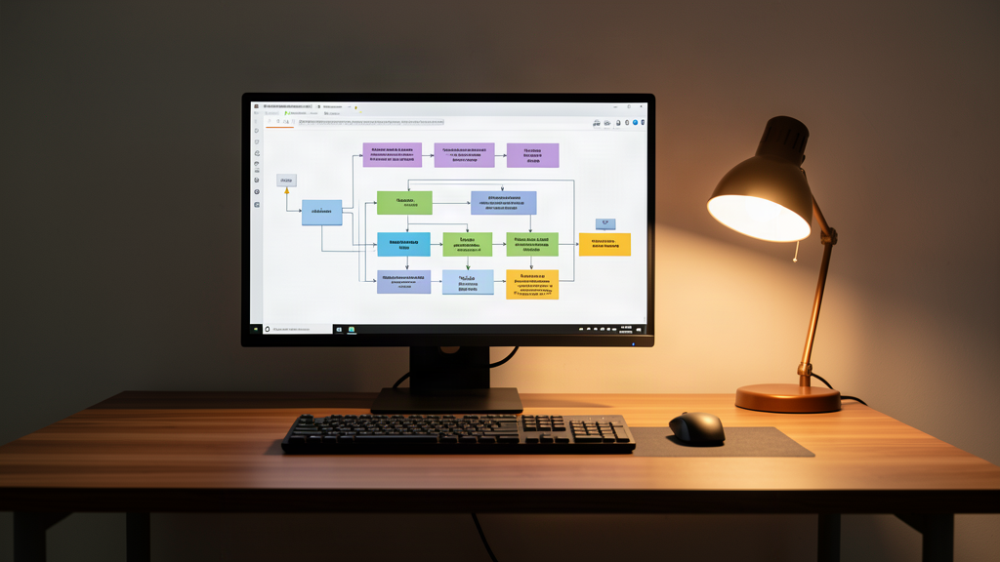

В индустрии укоренилась иллюзия: любую инженерную сложность можно залить гигабайтами весов. Сбоит логика? Возьми модель крупнее. Агент спотыкается? Оплати облачный кластер и скорми терабайты сырого текста.
Но когда алгоритм сходит с виртуального сервера и начинает физически двигать манипулятором на заводской линии, эта догма разбивается.
На днях стартап Standard Bots, выпускающий промышленных роботов, привлек 200 млн долларов при оценке в миллиард. Их манипуляторы работают на сборочных линиях гигантов уровня NASA и Amazon. Главный инженерный вывод новости спрятан в техническом подходе: компания принципиально отказалась от раздувания нейросетей.

Компактные веса против гигантомании: почему роботам не нужны супермодели
Принято считать, что для управления физической механикой нужна тяжелая мультимодальная модель. Нам годами внушают, что автономность начинается в районе сотен миллиардов параметров.
Команда Standard Bots пошла противоположным путем. Их роботы не используют гигантские модели — крутятся на компактных моделях порядка пары миллиардов параметров.
В чём логика: на заводе нет времени ждать ответ из облака. Манипулятор обязан решать задачу на локальном чипе с минимальной задержкой и точной траекторией. Когда действие строго ограничено физикой, универсальная сеть с терабайтами лишних знаний превращается в обузу.
Сбои на конвейере: как пара примеров заменяет масштаб
Что происходит, когда манипулятор натыкается на редкую нештатную ситуацию? Деталь лежит под непривычным углом, изменился свет или геометрия заготовки.
Сторонники слепого масштабирования скормили бы модели миллионы часов случайных видео в надежде на чудо. В Standard Bots действуют иначе: редкие сбои на конвейере закрывают парой десятков живых демонстраций (демо-данных), а не масштабом модели.
Особо никакой магии нет: оператор берет манипулятор и руками показывает правильное движение двадцать или тридцать раз. Компактная модель впитывает точечную выборку и закрепляет навык. Система не распыляет внимание на шум и не ломает выученные паттерны.
Информация возникает там, где есть разница: концентрированная демонстрация действия дает маленькой сети больше прикладного сигнала, чем терабайты нерелевантной информации.

Архитектурный рефрейм: софту пора учиться у манипуляторов
Я смотрю на этот кейс и вижу прямое отражение граблей, на которые мы наступаем в разработке.
В моих сценариях с оркестратором Hermes, локальными агентами в Antigravity и цепочками в n8n регулярно возникает похожий соблазн. Когда агент спотыкается на схеме данных, первая реакция — подключить самую тяжелую облачную модель. Кажется, что гигантский контекст сам все исправит.
Но опыт быстро отрезвляет. Рычаг роста не в раздувании весов модели, а в качестве точечного датасета.
Если дать маленькой локальной модели пять или десять выверенных примеров с чистой структурой, она работает предсказуемо. Выдает строгий JSON, укладывается в миллисекунды и не уходит в галлюцинации. Стоит убрать точные примеры и опереться на размер сети — пайплайн рассыпается от первой же аномалии. Прагматика и ничего лишнего.

Сухой остаток: куда смещается ценность инженерии
Стартап оценили в миллиард долларов не за самую большую нейросеть. Инвесторы оценили умение решать промышленную задачу минимальными вычислительными ресурсами.
Я считаю, что индустрия подошла к точке взросления. Период слепой гонки за размером моделей уступает место глубокой работе с данными. Побеждает не тот, кто сжег бюджет на кластер, а тот, кто умеет собрать чистую выборку из нескольких десятков демонстраций и упаковать ее в легковесный локальный рантайм.
А на каких моделях крутятся ваши рабочие процессы: переплачиваете за гигантские облачные API или переводите задачи на компактные локальные сетки с точечными примерами? Напишите в комментариях, как вы закрываете редкие сбои в своих пайплайнах.